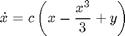
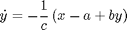
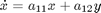
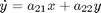
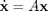
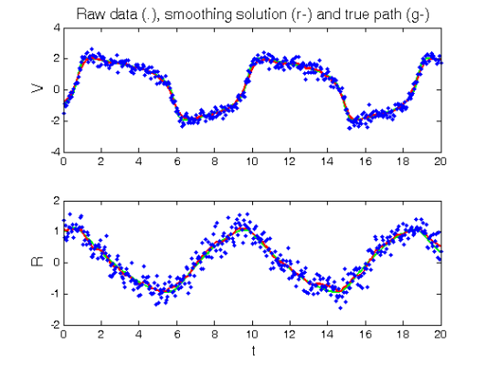
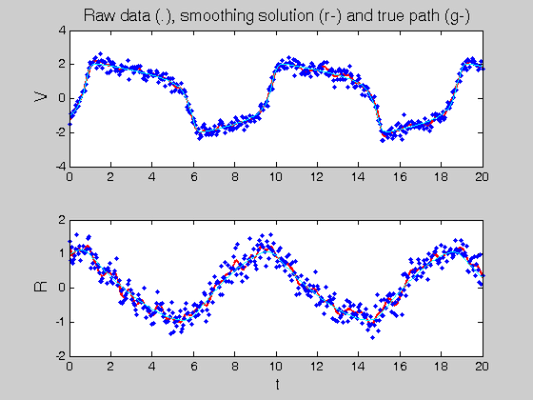
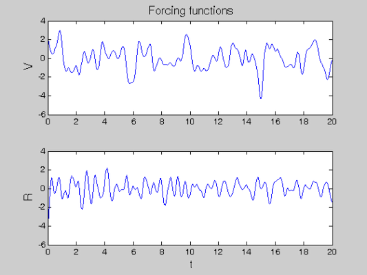
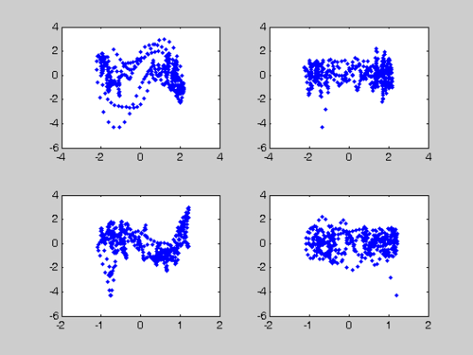
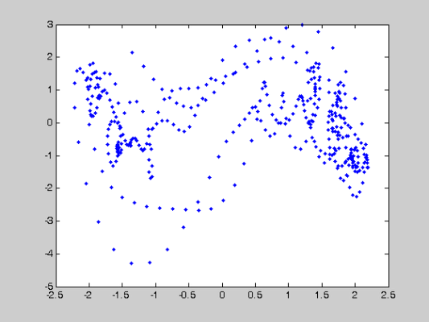

Example Diagnostics -- Learning the FitzHugh-Nagumo Equations
This page provides a demonstration of the use of forcing function diagnostic tools for model building in systems of differential equations.
We will use the FitzHugh-Nagumo Equations:


as an example, but we will will act on the basis of not knowing these equations. Therefore, we will start out with an autonomous linear system:


and then use diagnostic tools to uncover the missing cubic term.
The format of this demonstration follows that detailed in FhNEx.html and commentary will therefore be restricted to diagnostic terms.
Contents
- RHS Functions
- Various Parameters
- Observation times
- Create trajectories
- Set up observations
- Fitting parameters
- Optimisation control
- Setting up functional data objects
- Smooth the data
- Now do the profiled estimation
- Calculate a Sample Information Matrix
- Analyze lack of fit - estimate forcing functions.
- Diagnostics
RHS Functions
Since we are using a linear function to begin with, we make use of the genlin set of functions (although fhnfunode will be used to produce data). See genlinEx.html for a full description.
odefn = @fhnfunode; % Function for ODE solver (exact) fn.fn = @genlinfun; % RHS function fn.dfdx = @genlindfdx; % Derivative wrt inputs (Jacobian) fn.dfdp = @genlindfdp; % Derviative wrt parameters fn.d2fdx2 = @genlind2fdx2; % Hessian wrt inputs fn.d2fdxdp = @genlind2fdxdp; % Cross derivatives wrt inputs and parameters fn.d2fdp2 = @genlind2fdp2; % Hessian wrt parameters fn.d3fdx2dp = @genlind3fdx2dp; % Third derivative wrt inputs, inputs, pars fn.d3fdx3 = @genlind3fdx3; % Third derivative wrt inputs fn.d3fdxdp2 = @genlind3fdxdp2; % Third derivative wrt inputs, pars and pars
Various Parameters
y0 = [-1,1]; % Initial conditions pars0 = [0.2; 0.2; 3]; % Parameters for the FitzHugh-Nagumo equations startpars = [0.0361 1.5419 -0.3178 -0.0309]'; sigma = 0.25; % Noise Level
Observation times
tspan = 0:0.05:20; % Observation times obs_pts{1} = 1:length(tspan); % Which components are observed at obs_pts{2} = 1:length(tspan); % which observation times. tfine = 0:0.05:20; % Times to plot solutions
Create trajectories
odeopts = odeset('RelTol',1e-13);
[full_time,full_path] = ode45(odefn,tspan,y0,odeopts,pars0);
[plot_time,plot_path] = ode45(odefn,tfine,y0,odeopts,pars0);
full_path = [full_path full_path];
Set up observations
Tcell = cell(size(obs_pts)); path = Tcell; for i = 1:length(obs_pts) Tcell{i} = full_time(obs_pts{i}); path{i} = full_path(obs_pts{i},i); end % add noise Ycell = path; for i = 1:length(obs_pts) Ycell{i} = path{i} + sigma*randn(size(path{i})); end % and set wts wts = []; if isempty(wts) % estimate wts if not given for i = 1:length(Ycell) if ~isempty(Ycell{i}) wts(i) = 1./sqrt(var(Ycell{i})); else wts(i) = 1; end end end
Fitting parameters
lambda = 1000; % Smoothing for model-based penalty lambda = lambda*wts; lambda0 = 1; % Smoothing for 1st-derivative penalty nknots = 401; % Number of knots to use. nquad = 5; % No. between-knots quadrature points. norder = 6; % Order of B-spline approximation
Optimisation control
lsopts_out = optimset('DerivativeCheck','off','Jacobian','on',... 'Display','iter','MaxIter',20,'TolFun',1e-8,'TolX',1e-10); % Other observed optimiation control lsopts_other = optimset('DerivativeCheck','off','Jacobian','on',... 'Display','on','MaxIter',1000,'TolFun',1e-14,'TolX',1e-14,... 'JacobMult',@SparseJMfun); % Optimiation control within profiling lsopts_in = optimset('DerivativeCheck','off','Jacobian','on',... 'Display','off','MaxIter',1000,'TolFun',1e-14,'TolX',1e-14,... 'JacobMult',@SparseJMfun);
Setting up functional data objects
% set up knots range = [min(full_time),max(full_time)]; % range of observations knots_cell = cell(size(path)); % knots for each basis knots_cell(:) = {linspace(range(1),range(2),nknots)}; % set up bases basis_cell = cell(1,length(path)); % Create cell arrays. Lfd_cell = cell(1,length(path)); nbasis = zeros(length(path),1); bigknots = knots_cell{1}; % bigknots used for quadrature points nbasis(1) = length(knots_cell{1}) + norder - 2; for i = 2:length(path) bigknots = [bigknots knots_cell{i}]; nbasis(i) = length(knots_cell{i}) + norder -2; end quadvals = MakeQuadPoints(bigknots,nquad); % Create simpson's rule % quadrature points and values for i = 1:length(path) basis_cell{i} = MakeBasis(range,nbasis(i),norder,... % create bases knots_cell{i},quadvals,4); % with quadrature Lfd_cell{i} = fdPar(basis_cell{i},1,lambda0); % pts attatched end
Smooth the data
Since we are smoothing with a Linear Differential Equation

with initial parameters A=0, the model based penaly is equivalent to a first derivative penalty, and we will only use this.
DEfd = smoothfd_cell(Ycell,Tcell,Lfd_cell); coefs = getcellcoefs(DEfd); figure(1) devals = eval_fdcell(tfine,DEfd,0); for i = 1:length(path) subplot(length(path),1,i); plot(plot_time,plot_path(:,i),'g','LineWidth',2); hold on; plot(tfine,devals{i},'r','LineWidth',2); plot(Tcell{i},Ycell{i},'b.'); hold off; if i==1 ylabel('\fontsize{13} V') title(['\fontsize{13} Raw data (.), ', ... 'smoothing solution (r-) and true path (g-)']) else xlabel('\fontsize{13} t') ylabel('\fontsize{13} R') end end
Now do the profiled estimation
Recall that we are estimating the four elements of A, rather than a,b,c in the FitzHugh-Nagumo equations.
% be sure folder genlin is accessible addpath('../genlin') [newpars,DEfd] = Profile_GausNewt(startpars,lsopts_out,DEfd,fn,lambda,... Ycell,Tcell,wts,[],lsopts_in); disp(['New parameter values: ',num2str(newpars')]) % Plot the smooth with the data. There is a noticeable lack of fit. devals = eval_fdcell(tfine,DEfd,0); figure(2) for i = 1:length(path) subplot(length(path),1,i); plot(tfine,devals{i},'r','LineWidth',2); hold on; plot(Tcell{i},Ycell{i},'b.'); plot(plot_time,plot_path(:,i),'g'); hold off if i==1 ylabel('\fontsize{13} V') title(['\fontsize{13} Raw data (.), ', ... 'Profile fit (r-) and true path (g-)']) else xlabel('\fontsize{13} t') ylabel('\fontsize{13} R') end end
Warning: Name is nonexistent or not a directory: ..\genlin.
Iteration steps Residual Improvement Grad-norm parameters
1 1 118.893 0.00324632 1.3 0.069066 1.5249 -0.32215 -0.0623
2 2 118.893 1.92162e-006 0.634 0.069098 1.5254 -0.32232 -0.062665
3 16 118.893 -1.35439e-010 0.634 0.069098 1.5254 -0.32232 -0.062665
New parameter values: 0.069098 1.5254 -0.32232 -0.062665

Calculate a Sample Information Matrix
% We know this will be wrong, but just ot see what this looks like. d2Jdp2 = make_d2jdp2(DEfd,fn,Ycell,Tcell,lambda,newpars,[],wts); d2JdpdY = make_d2jdpdy(DEfd,fn,Ycell,Tcell,lambda,newpars,[],wts); dpdY = -d2Jdp2\d2JdpdY; S = make_sigma(DEfd,Tcell,Ycell,0); Cov = dpdY*S*dpdY'; % Standard errors StdDev = sqrt(diag(Cov)); % Correlations Corr = Cov./(StdDev*StdDev'); % Display these results disp('Approximate covariance matrix for parameters:') disp(num2str(Cov)) disp('Approximate standard errors of parameters:') disp(num2str(StdDev')) disp('Approximate correlation matrix for parameters:') disp(num2str(Corr))
Approximate covariance matrix for parameters:
0.00039378 0.00010042 -1.8277e-005 -0.00037038
0.00010042 0.0018829 0.0003851 -6.2286e-005
-1.8277e-005 0.0003851 8.712e-005 2.2756e-005
-0.00037038 -6.2286e-005 2.2756e-005 0.00038054
Approximate standard errors of parameters:
0.019844 0.043393 0.0093338 0.019507
Approximate correlation matrix for parameters:
1 0.11662 -0.09868 -0.95679
0.11662 1 0.95081 -0.073582
-0.09868 0.95081 1 0.12498
-0.95679 -0.073582 0.12498 1
Analyze lack of fit - estimate forcing functions.
Here is where we do some diagnostics. The main tool for using this is the function linforceest. It returns cell arrays of functional data objects that contain estimated forcing functions, and smooths to the data when those forcing functions are included in the differential equation.
Note that this function only works for forced linear systems. For non-linear systems, a non-linear optimization can be performed by using the forcing functions with the profiling methodology.
The idea is to then try to associate these forcing functions, as they vary over time, with the values of the smooths at the same times.
% Reshape 'A' into a matrix. A = reshape(newpars,size(DEfd,2),size(DEfd,2))'; % Calculating forcing functions, 'forces', and smooths. [smooths,forces] = linforceest(basis_cell,basis_cell,A,1:2,10000,... 0.00001,2,Tcell,Ycell,wts); % Evaluate these pointwise so their values can be compared. ss = eval_fdcell(tfine,smooths); fs = eval_fdcell(tfine,forces); % First of all plot the smooth with the data; we observe a reasonable % correspondence. figure(3) for i = 1:length(path) subplot(length(path),1,i); plot(tfine,ss{i},'r','LineWidth',2); hold on; plot(Tcell{i},Ycell{i},'b.'); plot(plot_time,plot_path(:,i),'c'); hold off if i==1 ylabel('\fontsize{13} V') title(['\fontsize{13} Raw data (.), ', ... 'smoothing solution (r-) and true path (g-)']) else xlabel('\fontsize{13} t') ylabel('\fontsize{13} R') end end % Now we plot the forcing functions over time -- there's a reasonable % amount of regularity in forces for the first component. This is less % clear for the second. figure(4) for i = 1:length(fs) subplot(length(fs),1,i) plot(tfine,fs{i}) if i==1 ylabel('\fontsize{13} V') title('\fontsize{13} Forcing functions') else xlabel('\fontsize{13} t') ylabel('\fontsize{13} R') end end 
Diagnostics
To try to evaluate how we should change the system in order to provide a more accurate fit, we plot each of the forcing functions against each of the components and observe whether there appears to be a systematic relationship.
figure(5) k = 0; for i = 1:length(ss) for j = 1:length(fs) k = k+1; subplot(length(ss),length(fs),k) plot(ss{i},fs{j},'.') end end % The most coherent relationship appears to be between the first forcing % function and the first component. Lets look at this more closely. figure(6) subplot(1,1,1) plot(ss{1},fs{1},'.') % Here the missing cubic trend is clearly visible. 